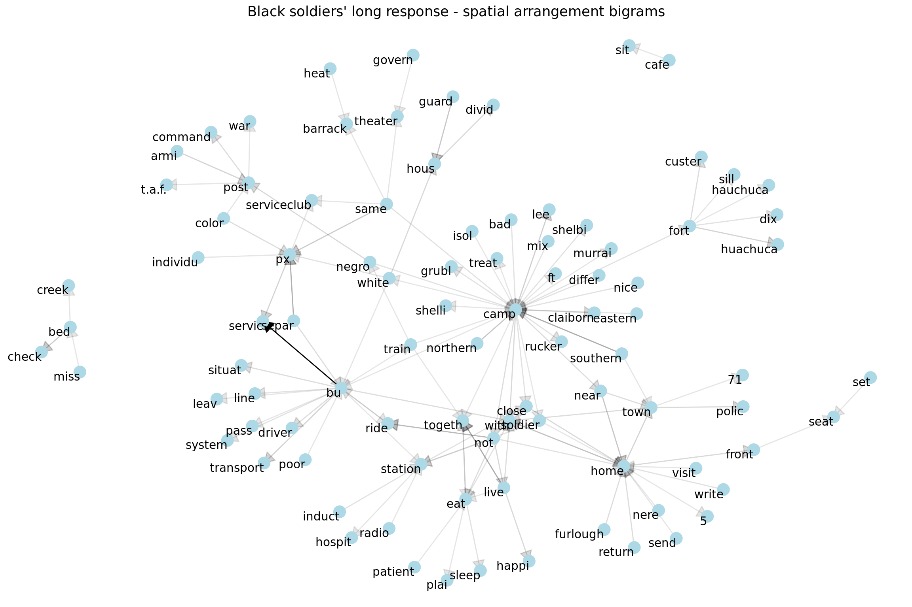
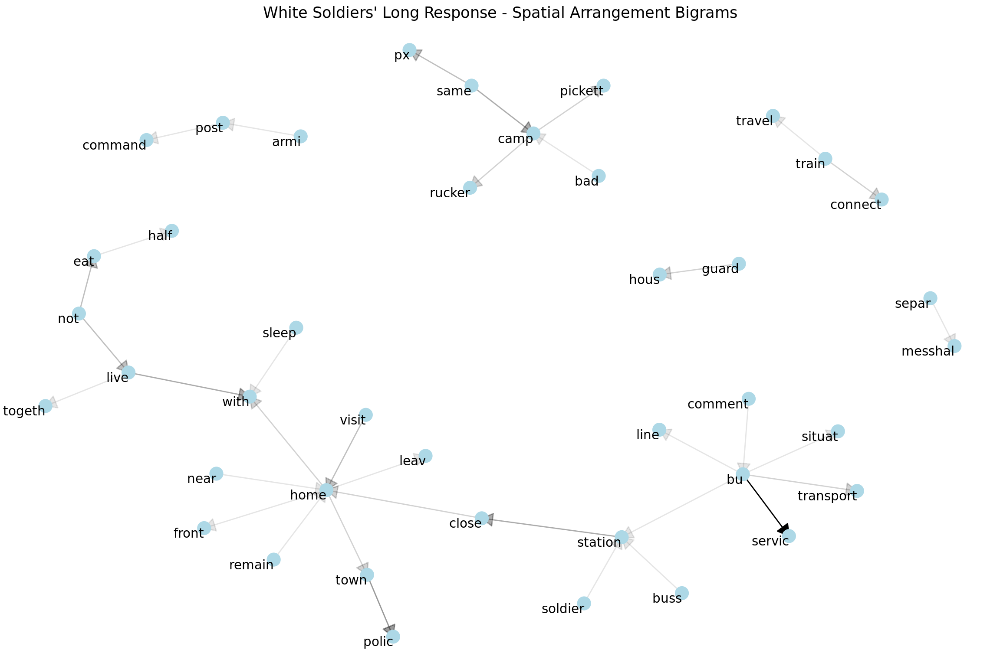
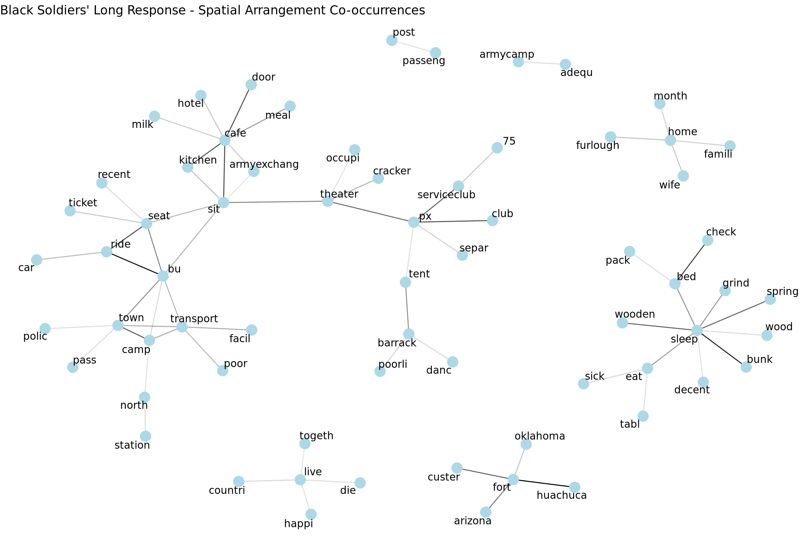
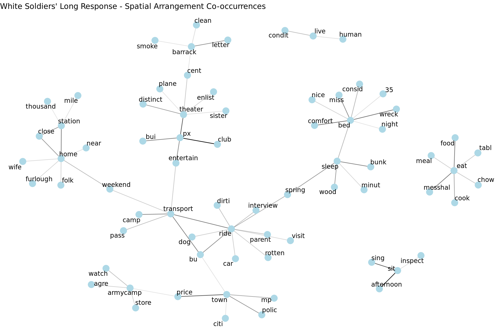
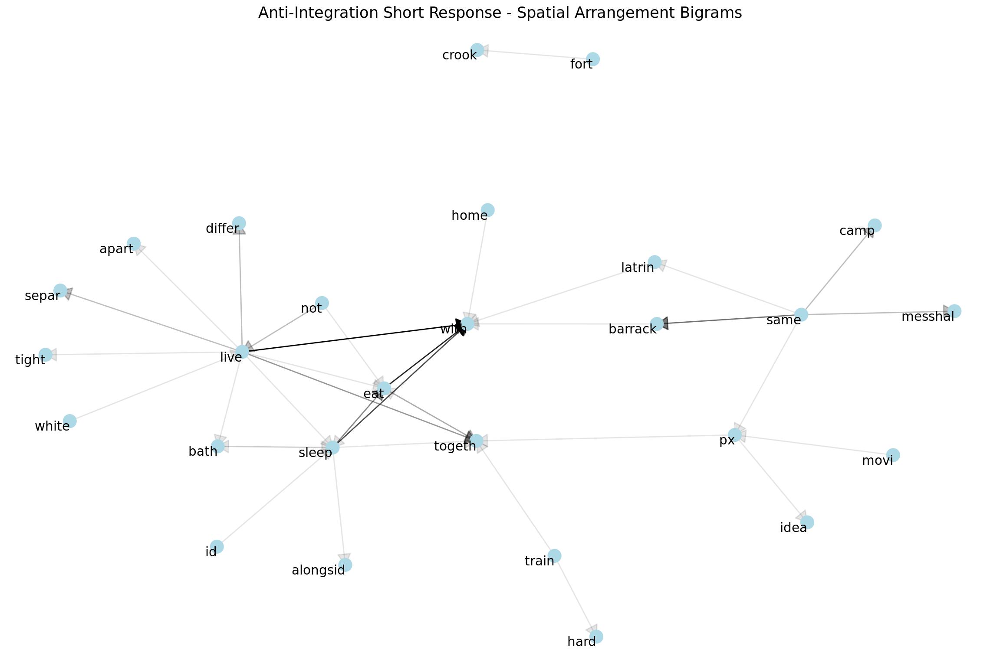
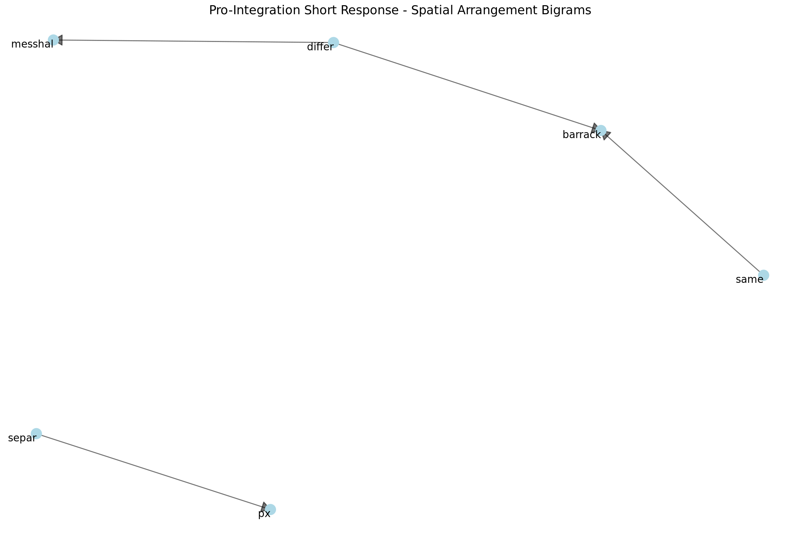
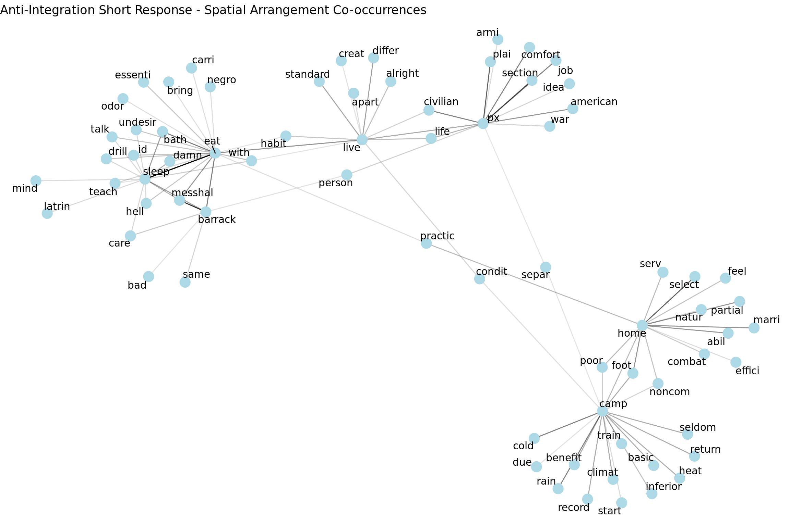
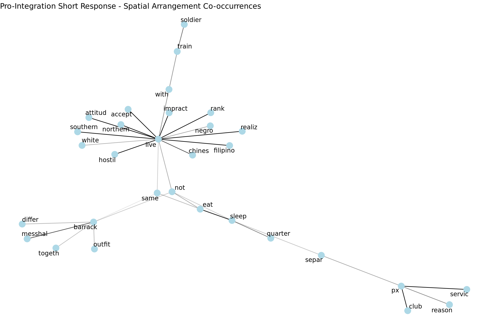

Race & Space
This page documents our use of text analysis to examine how race relations are spatially constituted.
R bigrams text networks race relations spaceAn aspect of racial segregation that we want to analyze is segregation related to spatial arrangement. Spatial segregation of Black Americans was enforced in the American South with numerous local and state laws known as the Jim Crow laws from late 19th century to early 20th century.
We are interested to see if themes of spatial segregation are prevelant in the soldiers' responses and experiences in the army during WWII.
A dictionary of words that relate to spatial arrnagement in the context of the military during World War II was created to filter for releveant responses. We included words like "bus", "seat", "train" which in historical context were segregated spaces. Furthermore, we added military specific spaces such as "barrac", "px", and "camp". You can view the dictionary below:
Black versus White Long Question

When Black soldiers are talking about spatial arrangements, we see that there's a greater amount of commentary from black soldiers than white soldiers (below).
Seating arrangements pop up in conversation with bigrams of "set seat", "front seat" as well as "cafe sit".
Furthermore, spatial arrangements in which the Black soldiers talk about in regards to integration include camp, living, eating, px, service club, barrack and theater. All of these words are paired with words such as "mix", "together", "same", "separate", and "individual."

The white soldiers also have commentary on the integration in regards to spatial arrangement in the army. We see that they want separate messhalls, and to not eat or live with the Black soldiers. However, we also see words such as "with", "same" and "together". Perhaps some white soldiers were okay with integration, but without context we cannot tell if those bigrams are also associated with some negations.
Co-Occurrence Networks for Spatial Terms


Pro vs. Anti-Integration Viewpoints
Bigrams of Anti-Integration White Soldiers' Responses

Bigrams of Pro-Integration White Soldiers' Responses

There are very few bigrams due to a relatively small dictionary and low volume of responses (under 100). However, we can see that the soldiers wanted different messhalls, barracks and separate px's despite wanting to integrate outfits. There is also commentary on sharing the same barracks, but due to the nature of bigrams, there is a possibility there was negative commentary on this pair of words.
Co-occurrences of Anti-Integration Short Responses

At the top of the network we can see a group of words that relate to the living situation in the army such as "live", "eat", and "sleep". Many of the associated words seem to be related to the conditions of those spaces such as odor, undesir (stemmed/lemmed version of undesireable), hell and bad. These adjectives could either have been used to talk about the physical conditions of the living space or to point out adjectives describing why the white soldiers would not want to be in the same space as a Black soldier.
The more obvious spatial segregation associations are words such as "apart", "differ", "with", and "same" which show that the soldiers were discussing integration in relation to "live", "eat", and "sleep".
Another interesting observation is we see the word "habit" being correlated to the words "live" and "eat". Some of the soldiers cited difference in habits regarding to lifestyle as a reason to stay in separate outfits.
Co-occurrences of Pro-Integration Short Responses

Although there were white soldiers who supported integration of army outfits, there was still clear commentary that the soldiers should not be sharing the same space in living arrangements or social spaces. An interesting observation is that persons of other ethnicities are associated with living.
An example of why Chinese and Filipino are mentioned along with live amongst the soldiers comments on integration is below:
## [1] "i realize however that my s to the last few s are impractical because of the hostile attitude southern whites some northern whites take toward living with negro. but if chinese or filipinos are accepted into the same ranks as the whites why not the negro."They use these two demographics of people to compare integration of Black soldiers to the acceptance of integration between white men and other races.